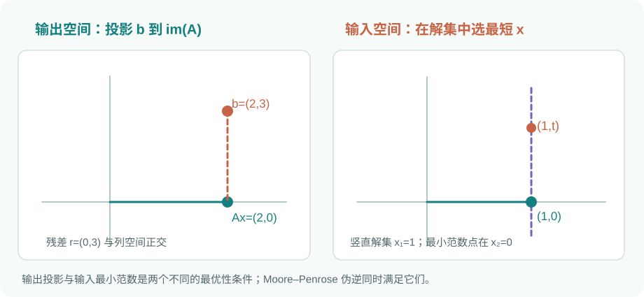

01 / 方程没有唯一解，应该返回哪个向量？
设 A=diag(2,0)，观测 b=(2,3)。由于 A 的第二行恒为零，没有任何 x 能让 Ax=b。在最小二乘意义下，所有 x=(1,t) 都给出同样的最小残差，但不同的 t 对应不同长度。Moore–Penrose 伪逆先找到最小残差，再从所有最优解中选欧氏范数最小的那一个。

更精确的两层定义：首先找出所有使 ‖Ax−b‖₂ 最小的 x；然后在这些 x 中最小化 ‖x‖₂。这个层次结构在欠定、超定以及秩亏系统中均适用；若 A 方阵且可逆，伪逆退化为普通逆。
02 / 四个 Penrose 条件为何足够确定唯一伪逆？
对任意实矩阵 A∈R^{m×n}，存在唯一 A⁺∈R^{n×m} 满足四个方程。前两个是广义逆的代数相容性，后两个使投影算子具有正交性（实数域转置，复数域用共轭转置）。
于是 AA⁺ 是输出空间到 im(A) 的正交投影，而 A⁺A 是输入空间到行空间（ker(A) 的正交补）的正交投影。二者都幂等且对称，但在矩形问题中处于不同维度，不能不看尺寸就互换顺序。
03 / 如何通过 SVD 把“不能求逆”变成“只逆非零方向”？
设 A=UΣVᵀ 的非零奇异值为 σ₁,…,σᵣ。将其倒数放进 Σ⁺ 的对应位置，零奇异值仍保持零，定义：
在例子 A=diag(2,0) 中，A⁺=diag(1/2,0)，所以 A⁺b=(1,0)。这个操作不尝试“逆转”已完全丢失的信息：ker(A) 中的方向既不能通过输出识别，也不应该凭空填入非零分量。
04 / 最小二乘和最小范数为何统一在 A⁺b？
当方程超定且不一致时，正规方程 Aᵀ(Ax−b)=0 表征残差与列空间正交。但若 A 秩亏，正规方程本身仍有无限多解；伪逆选与 ker(A) 正交的最短解。x*=A⁺b 正是该唯一选择。
在欠定的相容系统中，存在无限多精确解。所有解可写为 x=A⁺b+z，其中 z∈ker(A)，且 A⁺b 与 z 正交。因而 ‖x‖₂²=‖A⁺b‖₂²+‖z‖₂²；最小范数自然在 z=0 时取得。
| 系统类型 | 可保证的目标 | 不能保证的事 |
|---|---|---|
| 超定、一致或不一致 | 残差最小，再选最短解 | 所有 b 都可精确拟合 |
| 欠定、相容 | 精确拟合中的最短解 | 唯一满足 Ax=b 的向量 |
| 病态且噪声存在 | 代数意义上的伪逆解 | 统计估计稳定且无偏 |
05 / Tikhonov 正则化如何抑制小奇异值？
对 λ>0，考虑 minₓ ‖Ax−b‖₂² + λ‖x‖₂²，其解为 x_λ=(AᵀA+λI)⁻¹Aᵀb。在奇异基中，各方向的过滤系数是 σᵢ/(σᵢ²+λ)，不同于纯伪逆的 1/σᵢ，因此抑制小奇异值所带来的剧烈放大。
在 A=diag(2,0)、b=(2,3) 中，正则化解为 x_λ=(4/(4+λ),0)。λ 增大会缩小向量并增大拟合偏差。令 λ→0⁺ 时，此固定例子的解趋于伪逆解 (1,0)；一般问题的计算仍需避免直接形成病态正规方程。
06 / 标准库复算投影、四条件与正则化
from math import isclose
A=((2.,0.),(0.,0.))
P=((.5,0.),(0.,0.))
def mm(X,Y):
return tuple(tuple(sum(X[i][k]*Y[k][j] for k in range(2))
for j in range(2)) for i in range(2))
assert mm(mm(A,P),A)==A
assert mm(mm(P,A),P)==P
assert mm(A,P)==((1.,0.),(0.,0.))
assert mm(P,A)==((1.,0.),(0.,0.))
b=(2.,3.)
x=(P[0][0]*b[0],P[1][1]*b[1])
assert x==(1.,0.)
lam=1.
x_ridge=(4/(4+lam),0.)
assert isclose(x_ridge[0],.8)
print("pseudo inverse",x,"ridge",x_ridge)预期：pseudo inverse (1.0, 0.0) ridge (0.8, 0.0)。此处 A 与 A⁺ 都是对角矩阵，因此两个投影算子对称，四条 Penrose 条件也得以全部满足。工程实现应使用基于 SVD/秩判定的算法，如 LAPACK DGELSD。
参考资料
示例中有意使用可复算的小矩阵；文中的定义、条件与界限适用于所声明的矩阵类别，而不是来自图示的统计结论。